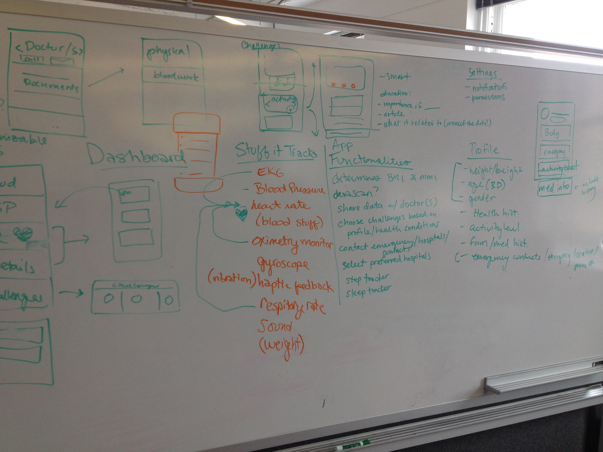
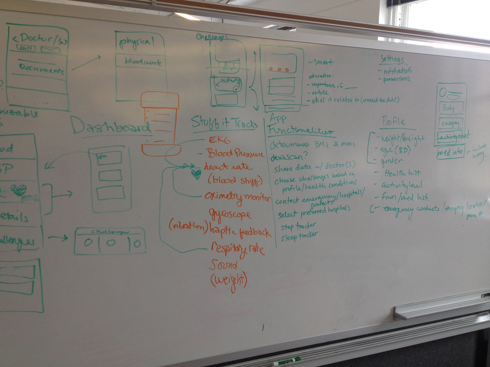

The Pulseband is an explorative concept of a wearable heart monitor specifically designed for individuals with heart conditions. The product measures a user’s blood pressure, heart rate, EKG, blood work levels, and sleep patterns, and sends out alerts when a user is having a medical emergency.
Heart disease is the leading cause of death for both men and women in the United States (1/4 of all deaths). It is also economically costly and accounts for approximately ~$312.6 billion in terms of health care expenses and lost productivity. Existing wearable technologies do not address the issue well enough or are focused on tracking fitness. With a 3-week timeline, our challenge was to design a wearable device and accompanying app for individuals with heart conditions that would monitor heart vitals and help users more effectively gain control of their health.
In order to be able to design a medical device and app, our team needed to understand the domain of cardiology and pathophysiology. We accomplished this by conducting in-depth academic literature reviews and subject-matter interviews with cardiac health professionals.
Insights: Perhaps our key takeaway from our research that most impacted our design strategy and approach is that at least a third of deaths from cardiovascular disease are preventable and are dependent on lifestyle choices. In addition, data from blood work are just as important in assessing a holistic view of heart health in addition to blood pressure, heart rate, and EKG readings.
We also needed to understand the competition, so we analyzed 20 existing similar products, their features, and how they are addressing health.
Insights: From our analysis, we realized that most existing products lack any communication with medical professionals. They also tend to focus on maximizing fitness for those who are already healthy rather than addressing health issues. Moreover, most heart-related products focus on only some of the aspects of heart health, which only provides a partial view of an individual’s health.
We aimed to gain a deeper understanding about prospective user behaviors, emotions, needs, motivations, attitudes, and knowledge towards their heart health, cardiac care, and technology. From our insights, we created the following user personas.
Insights: From our user interviews, we learned that:
Patients are generally not motivated to change their lifestyle. They are usually discouraged or in denial about their health. Many have a low understanding of the connection between their actions and their health. Interestingly, while they are not usually motivated to make huge lifestyle changes, most are highly compliant with simple or gradual behavior changes (i.e. taking one pill a day).
Medical professionals are interested in seeing trends among the data, though current technology in the hospital is not user-friendly enough to do this easily. They would like patients to do more for themselves between visits and are frustrated that patients aren’t motivated to improve their lifestyle.
We compiled the insights we gained in our discovery phase in several affinity mapping and whiteboarding sessions.
 

Based on these insights, we strategized to implement these four overall design principles:
Digestible: Easy to understand, digestible language and information
Educational: Connect the dots between action and health/risk
Non-disruptive: Seamless integration with lifestyle, simple and gradual changes or baby steps
Communicative: Share health data with health professionals
Based on these design principles, we chose to include the following product requirements:
Monitor and manage heart health: Tracks the relevant heart vitals, receives blood work data from doctors, which are incorporated in the overall heart assessment, and sends out medical alerts in the event of an emergency. We decided that in order to share data with the user’s health care provider, we also needed to design a web app for the health care professional.
Interactive education component: Personalizes educational components by relating information to the user’s own health data and actions
Daily challenges: Encourages specific actions based on a user’s personal data. Actions should be simple so that the user is encouraged to make small, gradual steps to implement a gradual lifestyle change rather than unsustainable grand gestures all at once.
To plan out the app framework, we created application maps, scenarios, and user flows.
After many initial sketches exploring how we can implement our design principles, we created wireframes and low-fidelity prototypes, which we utilized for user testing throughout our design process. We went through many iterations of wireframes using feedback from our user testing data.
This was our final design for the patient app and doctor web app. The user interface design was done by Kevin Kuk.
I'm currently unavailable to take on new projects, but I'd still love to chat. If you have any projects or apps that needs some design love, I'd be happy to discuss with you about how I can help given my availability or refer you to other designers.
Let's Get In Touch